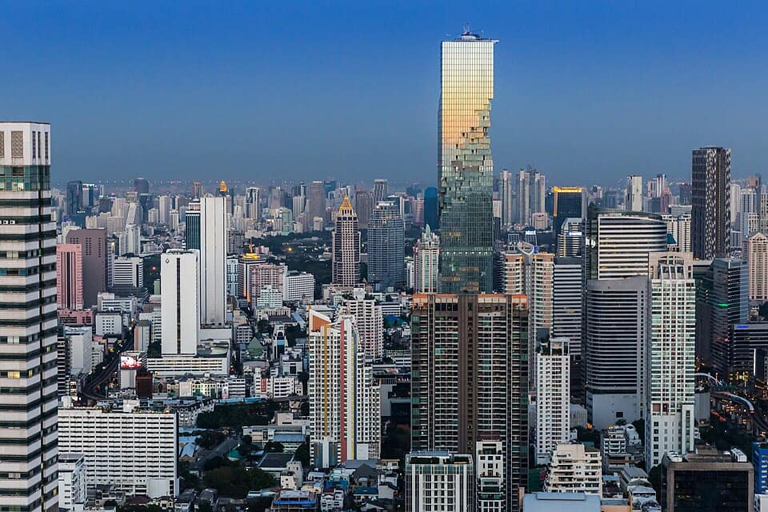
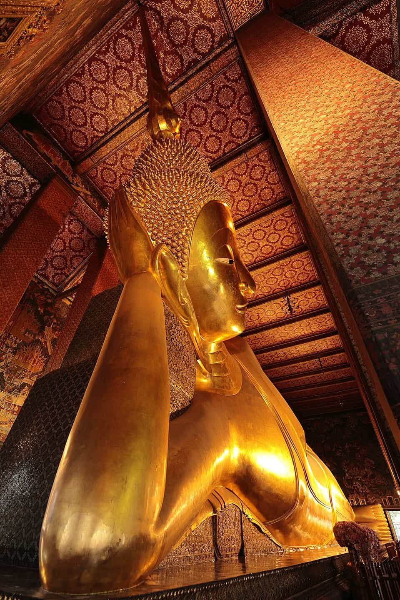

Thailand
Bangkok
Thailand — a whole city, district by district, sourced
6 places · 1 area · every one sourced, pinned and status-checked · last checked . Ordered by tier, then by number of named sources. How we choose
Grand Palace & Wat Phra Kaew
Start with Grand Palace & Wat Phra Kaew

Start with
Bangkok
Thailand — a whole city, district by district, sourced
6 places picked by 7 sources

Bangkok 6 places · area 1 of 1
Photo: Preecha.MJ · CC BY-SA 4.0 · Wikimedia Commons (resized) 1 Must see within Bangkok
Grand Palace & Wat Phra Kaew
The 1782 royal palace complex and the Temple of the Emerald Buddha — Thailand's most sacred and most-visited site.
Look for Royal palace & temple
Na Phra Lan Road, Phra Nakhon, Bangkok, Thailand
Recommended by ,
Photo: Mastertongapollo · CC BY-SA 4.0 · Wikimedia Commons (resized) 2 Must see within Bangkok
Wat Arun
The Temple of Dawn, its porcelain-encrusted riverside prang rising over the Chao Phraya.
Look for Buddhist temple
158 Thanon Wang Doem, Bangkok Yai, Bangkok, Thailand
Recommended by ,

Photo: Mastertongapollo · CC BY-SA 4.0 · Wikimedia Commons (resized) 3 Must see within Bangkok
Wat Pho
Home of the 46 m gold-leafed Reclining Buddha and the birthplace of traditional Thai massage.
Look for Buddhist temple
2 Sanam Chai Road, Phra Nakhon, Bangkok, Thailand
Recommended by ,
-
4 Must see within Bangkok · Thai
Raan Jay Fai
Bangkok's one-MICHELIN-star street stall; octogenarian chef Supinya 'Jay Fai' Junsuta cooks in ski goggles over charcoal. Held its star since 2018; now open Wed–Sat.
327 Maha Chai Road, Phra Nakhon, Bangkok, Thailand
Recommended by ,
-
5 Must see within Bangkok · Thai
Thip Samai
The 'Pad Thai Pratu Phi' institution near the Grand Palace, cooking over charcoal since 1966; MICHELIN Guide-recommended and a fixture of every Bangkok food tour.
313-315 Maha Chai Road, Phra Nakhon, Bangkok, Thailand
Recommended by ,
-
6 Worth the detour within Bangkok
Chatuchak Weekend Market
One of the world's largest weekend markets — 15,000+ stalls of food, crafts, plants and vintage.
Look for Market
587/10 Kamphaeng Phet 2 Road, Chatuchak, Bangkok, Thailand
Recommended by ,
How we choose
Every place is recommended by named sources (review-aggregator star ratings never count as the recommender), pinned to its door from a published coordinate, and status-checked. Closed places stay, flagged, so you know they’re gone.
- Must see
- The places to plan a visit around — graded within each area, not across the city.
- Worth the detour
- Strong picks, worth going out of your way for.
- Deep cut
- For the curious: smaller, odder, more local.
Within each area, places are ordered by tier, then by number of named sources — never by popularity. We don’t add ratings, prices or opening hours of our own. Any quoted in a write-up are the source’s, dated.
Follow changes — an RSS feed of every closure and status check in this guide, for any feed reader.
4 sights and 2 places to eat in the city of Bangkok, each traceable to the source that named it (Michelin, local news & vetted local/viral creators). Renders in soft pastel, light or dark.
Take Bangkok with you
Every place, its sources, the Guidebook and the photos at a small size. Map tiles are not saved: offline, the map shows our own pin schematic and every place stays listed.